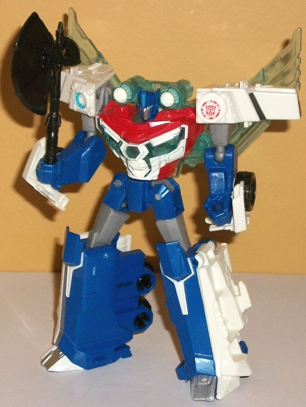
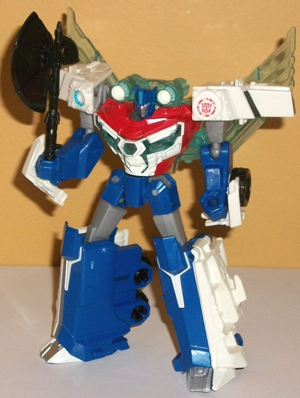

(NOTE: Because this is a repaint, this is not a full-blown review. This mainly covers any changes made to the mold and the color scheme, and merely compares it to the original RID2015 warrior Optimus Prime toy. For a review on the mold itself, read the review of the original RID2015 warrior Optimus Prime here .)
For the Toys "R" Us exclusive
version of the
Warrior version
of Power
Surge Optimus Prime (geez, this toy's got a lot of qualifiers), the colors
are generally on-par and more accurate to the show, with white being very
dominant, especially in the vehicle mode. Basically the white has almost
enitrely replaced the red in Prime's color scheme, with the only exception
being a bit of red paint on the top and sides of Optimus' chest to still
keep him looking Optimus-y enough around his head. The cab is fully white,
and the sides of the trailer are almost entirely white except for a bit
of blue near the ends and above the rear tires. Dark blue is on the usual
spots on a RID2015 Optimus Prime figure-- the lower legs, head, waist,
and lower arms-- though the dark blue used isn't QUITE as dark as on most
other RID2015 Prime toys. It's also got a bit of glitter in it, so it's
of a semi-metallic shade, and generally one of the better shades of the
color I've seen on an Optimus toys. The light electric blue parts on the
mass-release version of this toy are a translucent light blue of a particularly
icy shade on this version, and look much MUCH better overall. It really
makes the swords/wings/cannons in particular look like they're made of
Energon or something, and his chest looks pretty good with some transparent
bits in it as well. As for some minor colors, there's a bit of fairly light
milky gray on the upper legs and arms, but it's a bit darker than the very
blah shade of the color often used, and goes okay with the blue. The black
is in the usual places-- on the wheels, axe, and painted on the front truck
window. There's some silver on the feet, front grill, and faceplate, and
a bit of light blue on the robot eyes, center forehead vent, and on one
of the circular details on the top of the truck cab-- it complements the
white quite nicely. There's also a few white paint apps worth noting--
some on the sides of his feet so that both sides look white once you flip
the truck panels down for the robot mode during transformation; some on
his chest to mimic his look on the
larger
Power Surge Optimus toy
; on the fronts of his cannons; and some neat
angular paint apps below his kneecaps.
This toy has the same
mold changes as the mass-release version of warrior class Power Surge Optimus
Prime; no mold changes are unique to this release, however.
The Toys "R" Us exclusive
Warrior class version of Power Surge Optimus is definitely the version
to get, if you want him in this particular powered-up form. The white helps
add something new to the usual Optimus color scheme and, combined with
the translucent icy blue plastic, really makes him look powered up. The
colors are definitely superior to the mass-release version of this mold,
and the toy itself is much MUCH better than the bigger $50 version.
Review by Beastbot